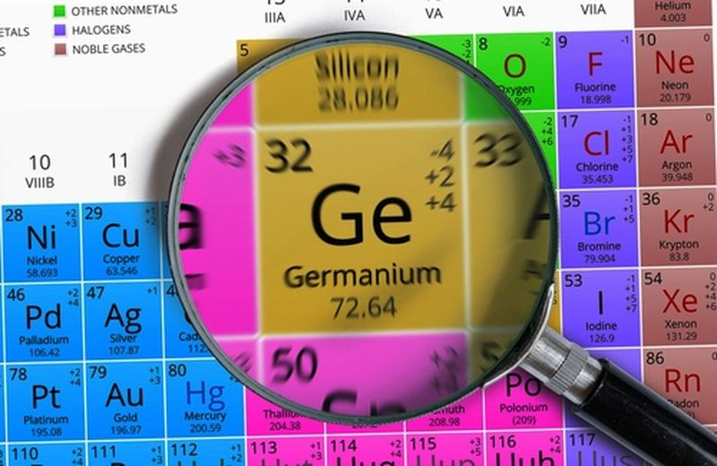
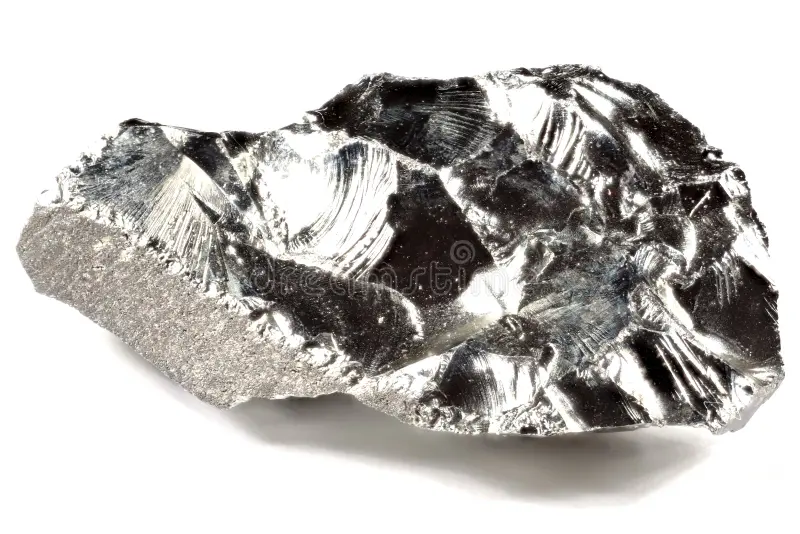

Германий
Герма́ний (химический символ — Ge, от лат. Germаnium) — химический элемент 14-й группы (по устаревшей классификации — главной подгруппы четвёртой группы, IVA), четвёртого периода периодической системы химических элементов Д. И. Менделеева, с атомным номером 32.Простое вещество германий — это типичный полуметалл серо-белого цвета, с металлическим блеском. Подобно кремнию, является полупроводником.

Существование германия («экасилиция») предсказал в начале 1870-х гг. Д. И. Менделеев, он также описал некоторые свойства этого элемента. В 1886 г. К. Винклер выделил из минерала аргиродита новый элемент, который назвал в честь своей родины.
Сырьём для получения германия служат отходы переработки руд цветных металлов, зола от сжигания углей. Из этого сырья методом соосаждения выделяют концентрат германия, обрабатывают концентрированной HCl, дистилляцией извлекают GeCl4, который очищают и гидролизуют. Полученный диоксид GeO2 восстанавливают водородом при нагревании. Для получения германия высокой чистоты используют зонную плавку и направленную кристаллизацию. Методом направленной кристаллизации выращивают монокристаллы германия, которые в процессе роста легируют микропримесями (сурьма, галлий, мышьяк, кремний и др.) для придания требуемых полупроводниковых свойств; содержание примесей 10–4–10–3 %. Мировое производство германия превышает 140 тыс. кг/год (2021).

Монокристаллический германий используют для изготовления диодов, транзисторов, фотодиодов, термо- и фоторезисторов, детекторов ионизирующих излучений и др. Диоксид GeO2 применяют как материал волоконной оптики, а также при изготовлении стёкол, прозрачных для ИК-излучения.